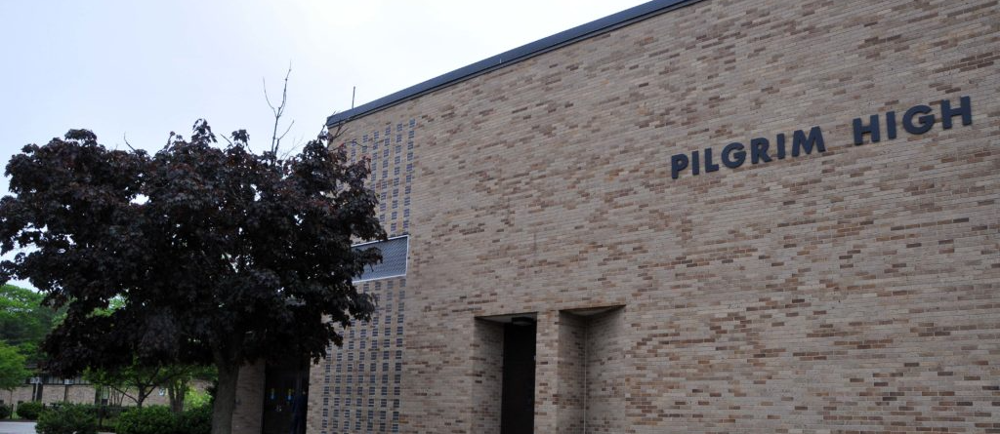
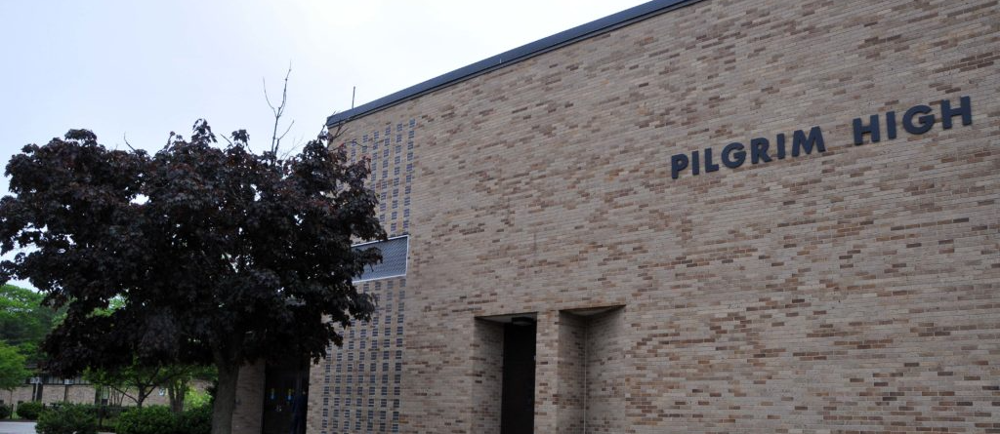

Andy Ho - Schooling
SCHOOLING
- Monsignor Gadoury Catholic School 2009-2013
- Good Shephard Regional Catholic School 2013-2014
- Holliman Elementary School 2014-2017
- Warwick Veterans Middle School 2017-2019
- Pilgrim High School 2019 - 2023
- New England Institute of Technology 2023 - current


 
